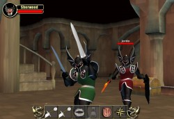
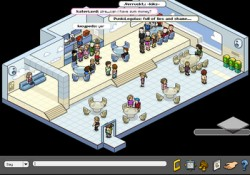
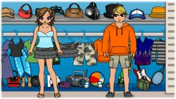
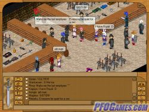
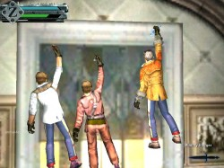
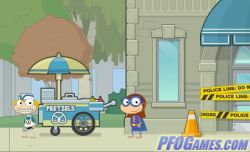

You wouldn't download a car! Growing up on the still developing internet of the 00's, you aren't really aware of the complexities and techniques of web surfing. Typing free online games and clicking that download button seems like a solid idea, until the computer bursts into flames! Needless to say, you learn fast.. kinda. I still managed to get a few viruses, but I could get things up and running agian in a days time! Eventually, after lots of trial and error I managed to come across "Play Free Online Games". The name does not do much to inspire confidence, but it delivered exactly what it said. Instead of being some shady site that redistributed download files, it instead acted as a directory and supplied links to the official hosts of various free games published on the net. I would use this site for years, I must have played a good 50% of the games listed! Granted, I never played any of them for very long. It was like a wine tasting, except each wine demanded my email address. For that reason, I'l keep my thoughts on these games brief.
If you'd like to check out the website, heres a Wayback link
|  | Sherwood Dungeon Sherwood was a medieval fantasy "RPG". Once you selected a character, you were plopped into the world with no instruction. You could fight roaming monsters and get a small variety of loot, but honestly? No one really did that, everyone playing was just there to chat. You didn't need to make an account or download anything, so this was a solid choice back in the middle school computer lab! |
| Wayback archive: May 2009 |
|  | Habbo Hotel Online virtual world, I only played it for a couple of months since it wasn't very free player friendly. I spent most of my time exploring random rooms, and raiding fridges >:3c |
| Wayback archive: June 2005 |
|  | Zwinky Zwinky was a social web game focused around creating doll avatars. While I never played Zwinky, almost everyone had some passing knowledge of it. Zwinky ads crowded out banner space on ALOT of websites! |
|  | Endless Online I really loved how their website looked and the overall game UI, it really captures that early anime-influnced style. As for the game itself, it was a standard RPG. I can't say I remember much about actually playing it. |
| Wayback archive: August 2005 |
|  | GunZ Holy shit! GunZ was my absolute jam! I used to play this all the time. GunZ was a third-person arena shooter with Guns, swords and wallrunning. What more could ya ask for?! Also, because the art style had that kinda edgy look going for it (ESPEICALLY the hair options) I would always make my character look like Leon from Resident Evil 4 lol! |
| Wayback archive: September 2007 |
|  | Poptropica They made us play this in my elementary school. We all thought it was multiplayer and spent a whole peroid trying to look for eachother. Spoiler, its not multiplayer! :| |
| Wayback archive: March 2009 |